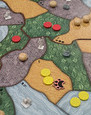

Spirit Island is a complex and thematic cooperative game about defending your island home from colonizing Invaders.
A round in Spirit Island will generally consist of spirits having a growth phase and an action phase. Invaders then have their phase and, lastly, a second spirit action phase takes place.
The game ends with players meeting their current victory condition, losing by having their spirit presence removed completely from the board, the island being too heavily damaged, or the invader action deck runs out. Let’s take a look at some examples.
